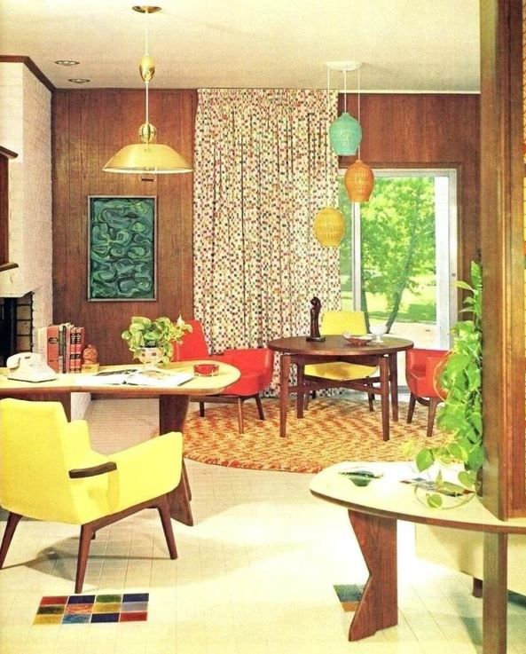

A arquitetura brasileira dos anos 1960
A arquitetura brasileira dos anos 1960 foi marcada pelo estilo modernista e pelo surgimento do brutalismo. A modernidade era expressa em edifícios com grandes vãos, linhas retas e uso de materiais como concreto e vidro, enquanto o brutalismo, com seu concreto aparente e volumetrias marcantes, ganhou destaque em obras como o Museu de Arte Moderna do Rio de Janeiro (MAM-RJ) e o Museu de Arte de São Paulo (MASP).
Características da Arquitetura Brasileira dos Anos 1960:
Continuidade do Modernismo:
Os princípios do modernismo, como a busca por formas geométricas simples, a utilização de materiais industriais e a integração com a natureza, continuaram a influenciar os projetos da época.Surgimento do Brutalismo:
O brutalismo, que se caracterizava pela utilização do concreto aparente e pela priorização da estrutura sobre a fachada, ganhou destaque em projetos como o Museu de Arte Moderna do Rio de Janeiro (MAM).
